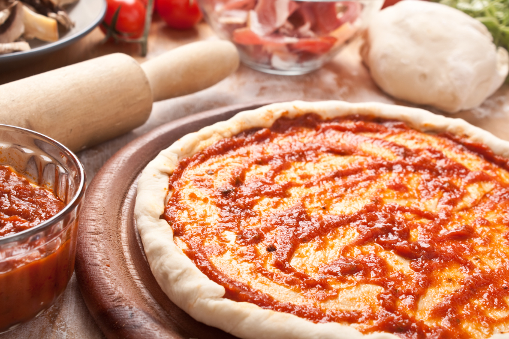

Tomato Sauce Pizza
~Chef Ishita Shah

Ingredients
Ingredients for Tomato Sauce
3 nos. robust red tomato
2 nos. Jalapeno /green chilli
1 1/2 red onion
5-6 nos garlic cloves
1/2 teaspoon peppercorns
1 teaspoon oil (optional )
1 1/2 tablespoon tomato ketchup
salt for seasoning
(This recipe would yield about 500ml of sauce ,convenient for four 11 inch pizza)
Ingredients for the Millet pizza Base
1 cup Jowar Flour (finger millet )
1 cup Ragi Flour (finger millet )
3/4 cup warm water
1/2 teaspoon salt
1/2 teaspoon dried /fresh oregano
1/2 teaspoon oil
Recipe-
Method for Tomato Sauce
1)Heat a pan and add all tomato ,chilli ,onion,garlic,peppercorns to roast (adding oil is optional ,I haven't used any oil )
2)Roast them until grill marks and nicely browned.
3)Take it off the pan and add it to the blender and blend with ketchup until a smooth paste like consistency, Season it with salt .
Method for Millet pizza base
1)Heat water in a bowl add oil and salt
2)In another bowl add the millet flours together and pour over the hot water mix .
3)Kneed the dough until soft enough and let it rest for about 15-20 minutes .
4)Divide the dough into 2 portions and slowly roll it according to the thickness (thin crust /thick crust )
5)Heat a pan add the base on it ,apply a splash of water on the top of the base ,cook until it is completely dry & then flip it to the other side .
6)Cook on a low flame until the base starts to fluff up .Take it off the pan and cook it directly on the gas & keep turning in intervals .
7)Cook one side thoroughly and keep one slightly raw .
Assemble the Pizza
1)Assemble the sauce on the completely cooked side of the base & top it with seasonal vegetables or meat & finish with mozarella on the top .
2)Add the pizza to pan,drizzle some oil for the base to cook and also get slightly crispy .Cook on slow flame for 15-20 mins until the cheese melts and turns golden brown.
3)Finish with Balsamic drizzle & crushed oregano or chilli flakes.
Back to Categories (श्रेणियों में वापस)
Back to Recipes (व्यंजनों पर वापस जाएं)